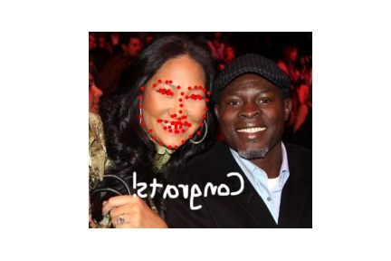
The objective of this project is to predict facial keypoints on facial images using various convolutional neural network (CNN) architectures.
The first task is to predict the coordinates of a person's nose tip in an image of their face. We use the IMM dataset containing 240 facial images in various orientations, each with 58 annotated facial keypoints. The first 192 images are used as training data and the remaining 48 images are held out as the validation set. Below are some sample images from the dataset along with the nose tip labels.
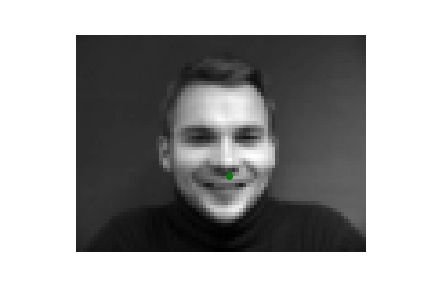
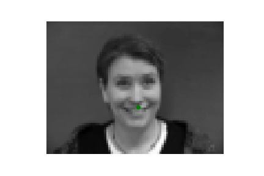
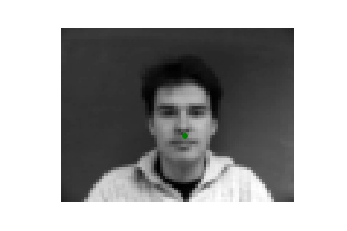
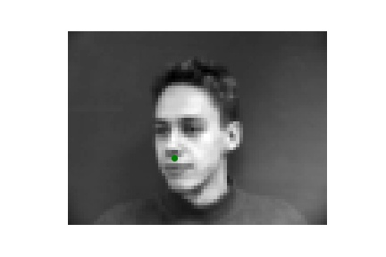
I trained two simple CNNs, each with 3 convolutional layers followed by 2 linear layers. The first network used $3 \times 3$ kernels and the other had $7 \times 7$ kernels. These models were trained for 20 epochs with a batch size of 16 using MSE loss.
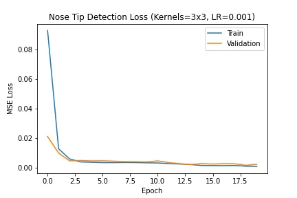
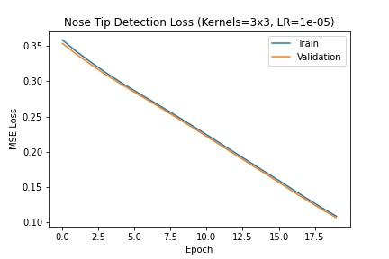
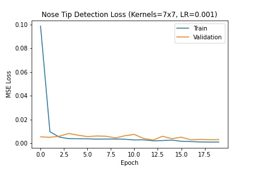
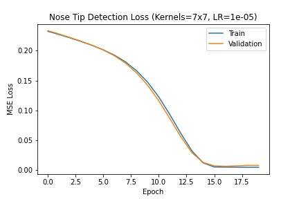
The $3 \times 3$ kernel model converged more stably and with slightly lower validation loss. It performed well on aligned faces but struggled with tilted heads. Two good and two bad predictions:
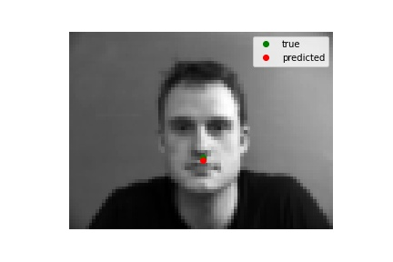
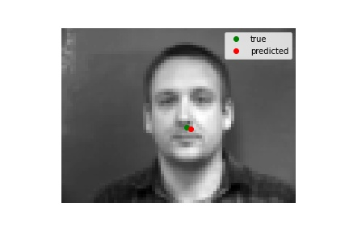
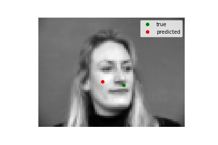
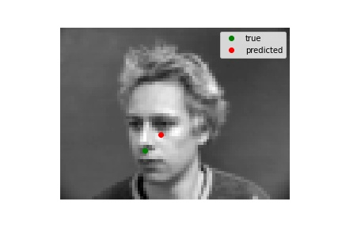
Next, we predict all 58 facial landmarks on the same IMM dataset. To enhance the limited data, we apply data augmentation including random rotation, translation, cropping, scaling, and color jitter. Some augmented samples:
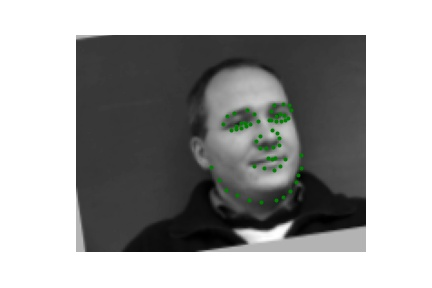
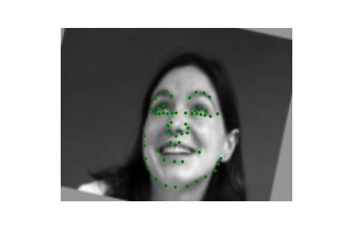
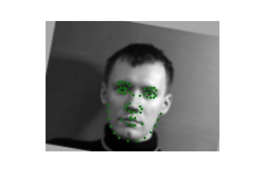
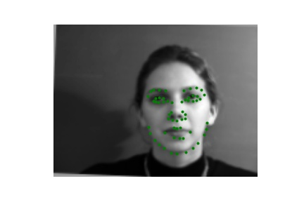
The model uses 5 convolutional layers and 3 linear layers, trained for 20 epochs with a learning rate of $10^{-4}$.
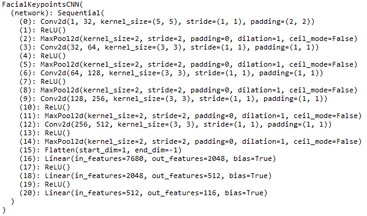
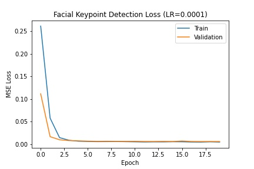
Due to limited data and a relatively primitive architecture, the model did not generalize well. Predictions tended toward average keypoint positions when the input was poorly aligned. Two decent and two poor predictions:
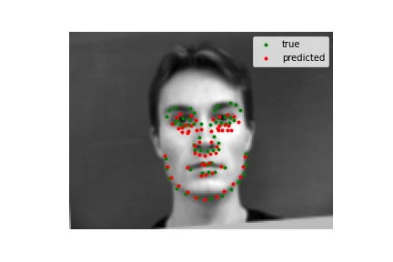
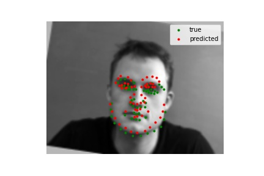
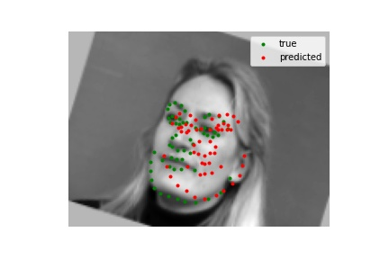
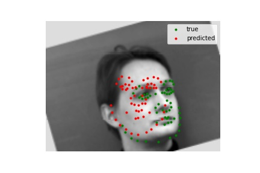
Visualizing the learned filters in the first convolutional layer:
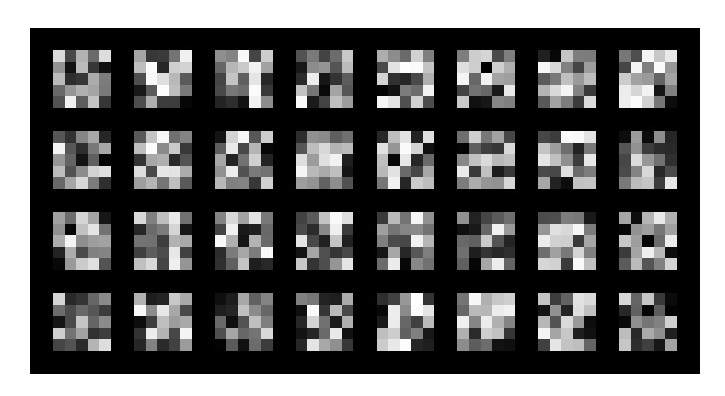
We turn to the larger iBug dataset with 6666 images and 68 facial keypoints per image. After an 80-20 train-test split, we feed the augmented data into a pretrained ResNet-34 with modified initial and final layers. Training runs for 15 epochs with a batch size of 64 and learning rate of $10^{-4}$.
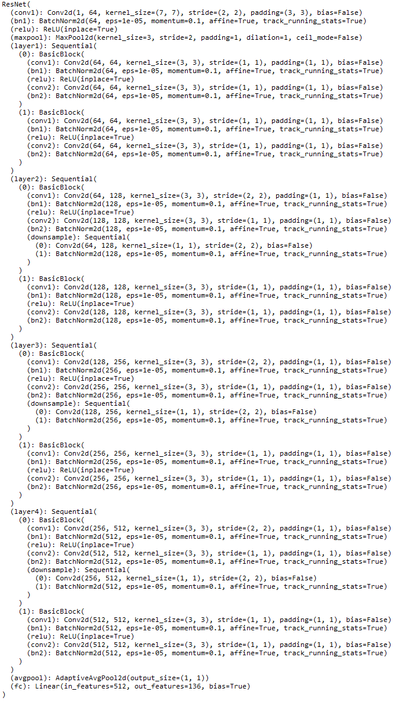
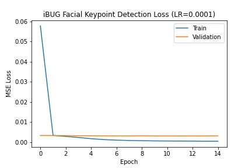
This transfer learning approach yielded significantly better results:
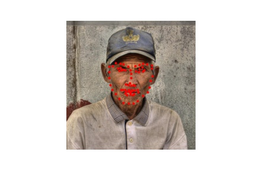
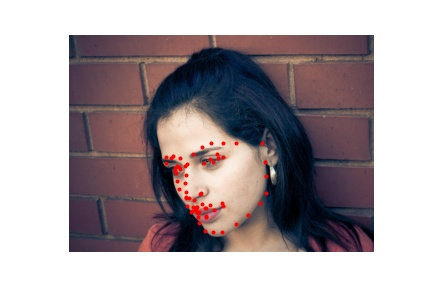
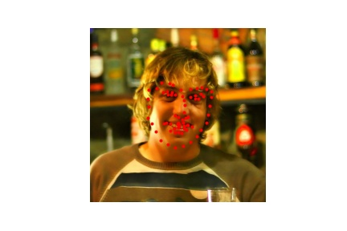
Testing on personal photos, the model handles standard faces well but struggles with unusual accessories:
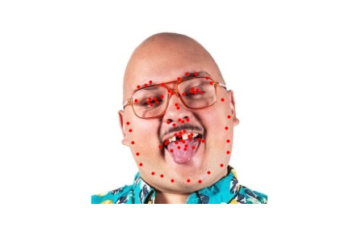
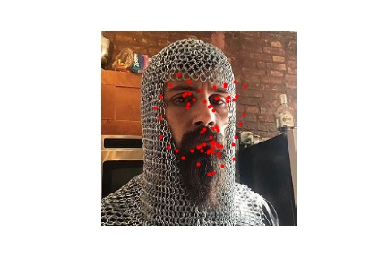
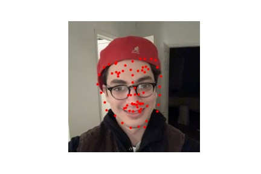
We transform the regression problem into pixelwise classification, outputting how likely a given pixel is to be a keypoint. We use a pretrained U-Net with a softmax layer, interpreting the output as a probability distribution. Target labels are heatmaps with 2D Gaussians ($\sigma=3$, kernel size 15) centered at ground truth keypoint coordinates.
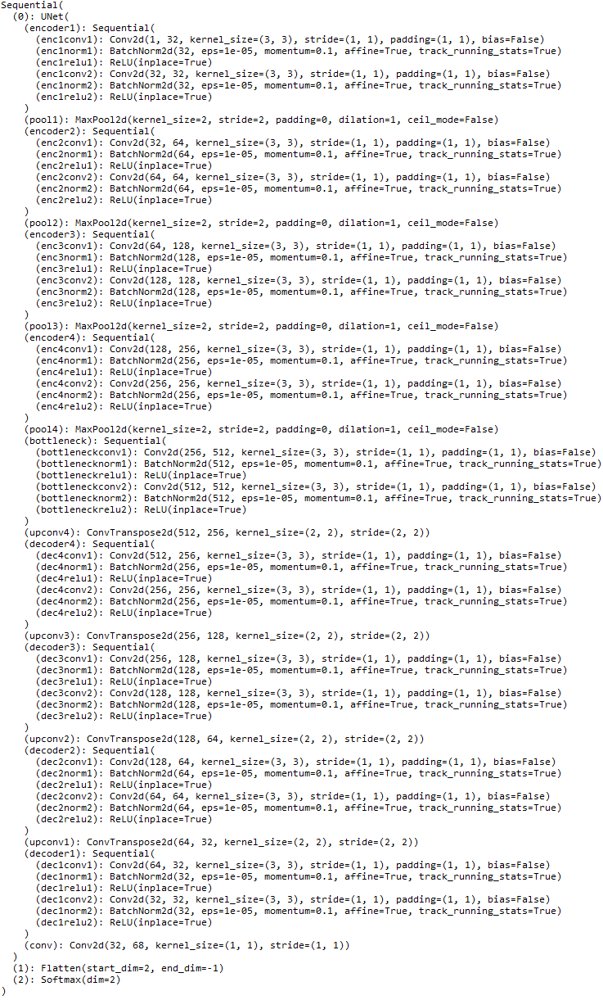
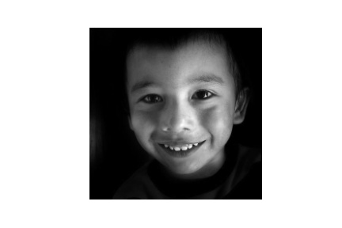
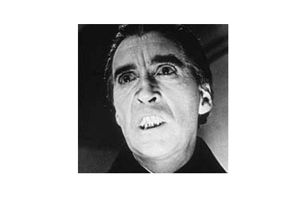
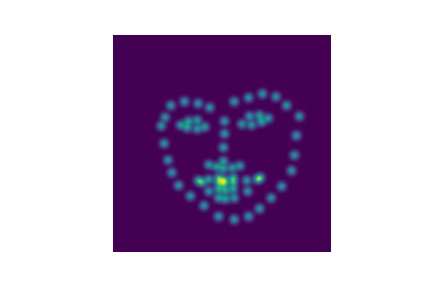
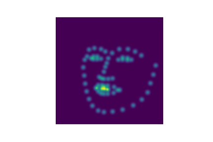
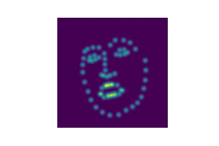
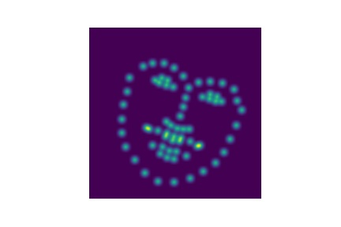
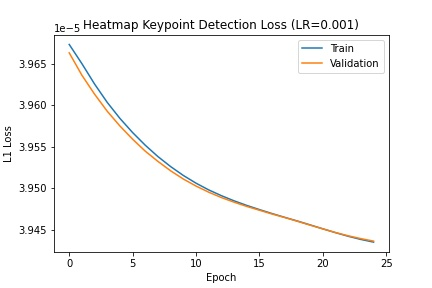
Although losses converge, the heatmap outputs are somewhat redundant — many of the 68 channels produce similar coordinates, leading to clusters around certain keypoints while others are missing:
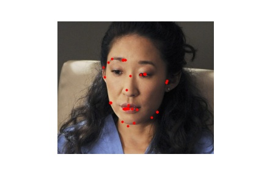
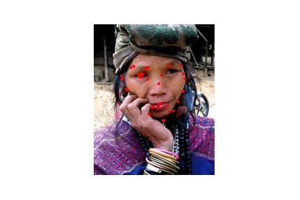
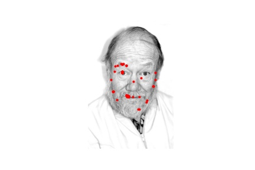
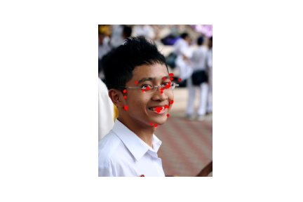